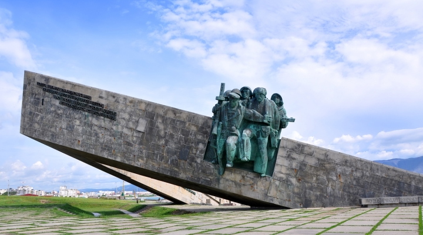

Мемориал-музей «Малая земля»
Мемориал-музей «Малая земля» (Новороссийск) находится на том месте, где в годы Великой Отечественной войны разворачивались трагические события. С 4 февраля по 16 сентября 1943 года Красная армия героически держала оборону Новороссийска от немецко-фашистских войск. Этот период сыграл ключевую роль во всей битве за Кавказ.
мемориал малая земля новороссийск
музей малая земля новороссийск
Память тех событий отражает мемориальный комплекс «Малая земля». Он посвящен высадке морского десанта под командованием майора Цезаря Львовича Куникова в ночь с 3 на 4 февраля 1943 года. Мемориал «Малая земля» состоит из монумента, внутри которого находится музей боевой славы, и музея военной техники. Памятник-ансамбль «Малая земля» был открыт в Новороссийске 16 сентября 1982 года, в день 39-ой годовщины разгрома немецко-фашистских войск. Авторы: В. Цигаль, Белопольский, Р. Кананин, В. Хавин.
памятник малая земля
малая земля новороссийск
памятник с надписью
Монумент мемориала-музея «Малая земля» (Новороссийск) похож на нос боевого корабля, на полном ходу вырвавшегося на берег: одна его опора находится на суше, а другая – в море. Наверху размещена десантная рота. Высота памятника около 22 метров.
мемориальный комплекс малая земля новороссийск
вид сзади
десантная рота
памятник ансамбль малая земля
Внутри мемориала «Малая земля» находится музей боевой славы. Здесь расположены 30 барельефов – портреты Героев Советского Союза, которые сражались за Новороссийск. В самой верхней части Музея боевой славы находится скульптура «Сердце». Внутри капсулы-сердца находится список погибших за Новороссийск. Надпись на памятнике гласит: «В памяти, в сердце – навсегда». Каждый год 9 мая проходит операция «Память», в ходе которой в торжественной обстановке производится «дозакладка» в капсулу списка из выявленных фамилий павших бойцов. Во время посещения Музея боевой славы посетителей сопровождает торжественный хорал «Память», композитора Евгения Птичкина.
сердце мемориал малая земля новороссийск
Мемориал-музей «Малая земля» (Новороссийск) – охраняемая территория, значительную часть которой составляют оставшиеся после боев окопы, рвы, траншеи и наблюдательные пункты.
